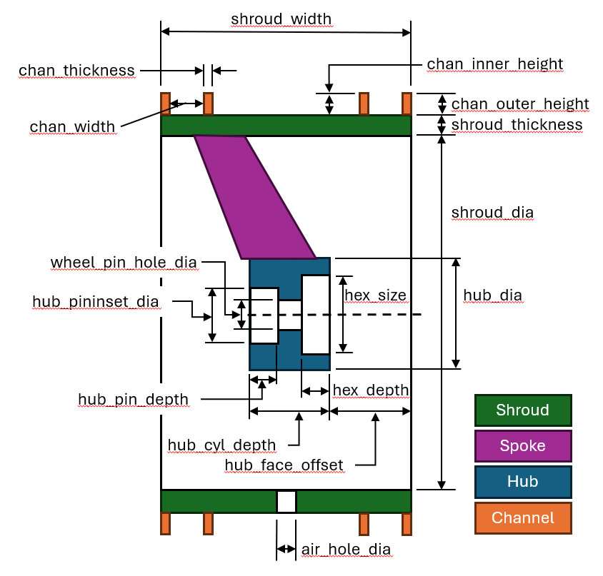
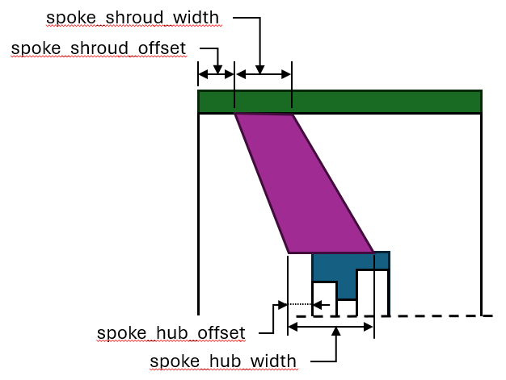

Tire Model Diagram
The tire parameter model is fairly comprehensive but that can make it complex. Cross sections of the entire tire and a single spoke are shown with the specific parameters values called out.


The tire parameter model is fairly comprehensive but that can make it complex. Cross sections of the entire tire and a single spoke are shown with the specific parameters values called out.

